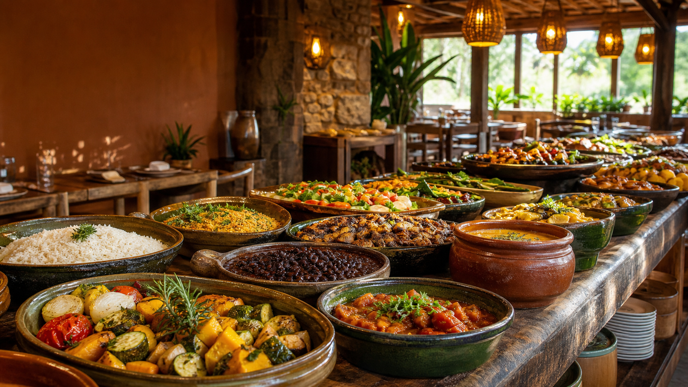

PROPOSTA DIGITAL · 2026
Uma vitrine à altura
da experiência à mesa.
Novo site institucional do Restaurante Bernardo Monteiro, criado para despertar desejo, gerar contatos e abrir novas relações comerciais.
Apresentado porProspertaSites que vendem. Processos que rodam sozinhos.
01 · OPORTUNIDADE
O restaurante já tem sabor.
Agora ele tem presença.
Antes mesmo de visitar o salão, o cliente precisa sentir a atmosfera, confiar na proposta e encontrar um caminho simples para conversar.
mais marcante
mais organizado
para crescer
02 · CONCEITO VISUAL
Rústico.
Acolhedor.
Inesquecível.
A direção visual combina tons terrosos, verde profundo, tipografia editorial e fotografia generosa. O resultado transmite comida de verdade, cuidado e mesa farta.
Terra · mata · cerâmica · linho
03 · EXPERIÊNCIA DO SITE
Uma história que se revela
enquanto o visitante navega.
Movimentos suaves conduzem o olhar sem competir com o conteúdo. A experiência funciona em desktop, tablet e celular.
bernardomonteiro.com.br
COMIDA FRESCA · TODOS OS DIASSabor de casa.
Mesa sempre farta.Quero conhecer →
Mesa sempre farta.Quero conhecer →
04 · TRÊS PORTAS DE ENTRADA
O site conversa com quem
quer sentar, somar ou fornecer.
Clientes
Conhecem a atmosfera, entendem o buffet e encontram contato rápido.
DESEJO → VISITAEmpresas & parceiros
Descobrem possibilidades para grupos, encontros e pequenas celebrações.
INTERESSE → PROPOSTAFornecedores
Encontram um canal organizado para apresentar produtos e construir relações.
CONEXÃO → PARCERIA05 · O QUE FOI CONSTRUÍDO
Bonito na frente.
Bem resolvido por trás.
Cada detalhe foi pensado para apresentar a marca com clareza e facilitar o próximo passo do visitante.
- ✓Design exclusivo e responsivoLeitura confortável em qualquer tela
- ✓Animações profissionaisGSAP e ScrollTrigger com movimento responsável
- ✓Formulário comercial validadoMais destaque para contatos qualificados
- ✓WhatsApp como apoioConversa rápida sem desviar da jornada principal
- ✓Base pronta para publicaçãoConteúdo, SEO inicial e acessibilidade

06 · PRÓXIMOS PASSOS
Da proposta para
o mundo.
01Aprovar identidade e estrutura02Inserir informações definitivas03Revisar e publicar o site
ProspertaDesenvolvimento de sites e automaçãoprosperta.com.br ↗